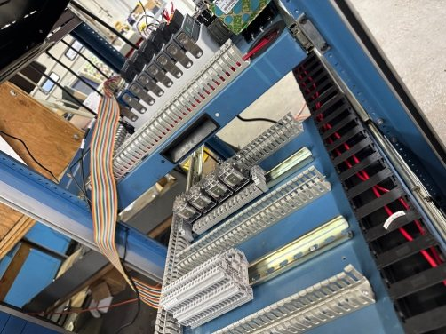
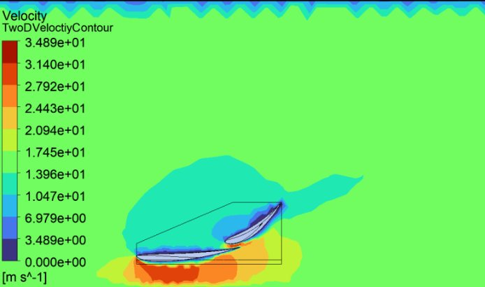

Experience

Electro-Mechanical Engineering Intern
D&D Motor Systems · Sep 2025 to Jan 2026
- Helped build and commission a prototype production dynamometer for testing AC and DC motors, as an in-house alternative to commercial systems that can cost over $500,000.
- Wired and integrated sensors, telemetry and safety systems, and fixed signal quality problems at high speed with filter and wiring changes.
- Used the new dynamometer to test and validate the company's first AC motor platform.
- Analyzed years of motor test data, found an efficiency drop, and traced it to a brush manufacturing defect from a supplier.
- Wrote test procedures, engineering reports and a motor database to catch future performance drops.

Avionics & Propulsion
Syracuse Rocketry Club (Orbit) · 2022 to Present
- Designed and built a thermocouple instrumentation system to measure engine temperatures during static-fire tests of the Zephyr rocket.
- Handled sensor selection, wiring, signal conditioning, embedded programming and data acquisition.
- Worked with the propulsion, structures and software teams to integrate avionics hardware into the vehicle.
Apprentice Aircraft Maintenance Engineering Intern
Endeavor Air, LaGuardia Airport · May to Aug 2024
- Assisted licensed Aircraft Maintenance Technicians with A-checks, inspections, troubleshooting and fault isolation on commercial aircraft.
- Performed avionics checks, wiring inspections, brake and tire changes, and Minimum Equipment List (MEL) item work.
- Completed maintenance documentation following Federal Aviation Administration (FAA) regulations and maintenance manuals.

Aero & Engine Systems
Citrus Racing (Formula SAE) · 2022 to 2026
- Ran CFD on the CR5 front wing in ANSYS Fluent, found the solution had not fully converged, and documented the limits and fixes before the results were used.
- Took the wing from CAD to 3D-printed TPU prototypes for wind tunnel testing.
- Took part in engine teardowns and rebuilds, inspecting parts for wear and checking critical dimensions against spec.
Student Technician, IT & Linux Systems
Syracuse University College of Engineering · Aug 2022 to Present
- Supported 1,000+ engineering workstations, including lab and research systems.
- Validated engineering software compatibility during the Windows 10 to Windows 11 migration.
- Wrote PowerShell automation and compliance reports that the department still uses.